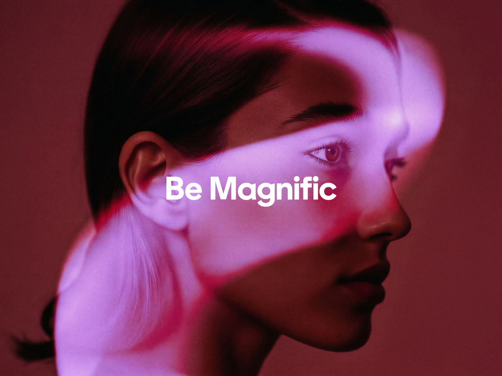
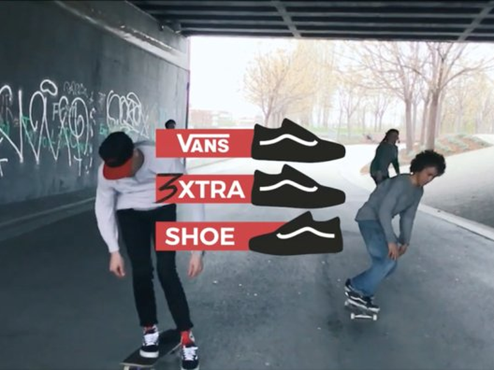
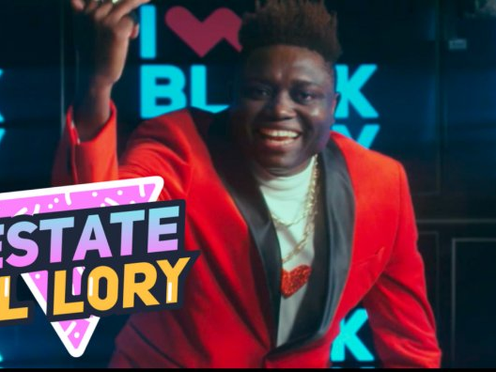
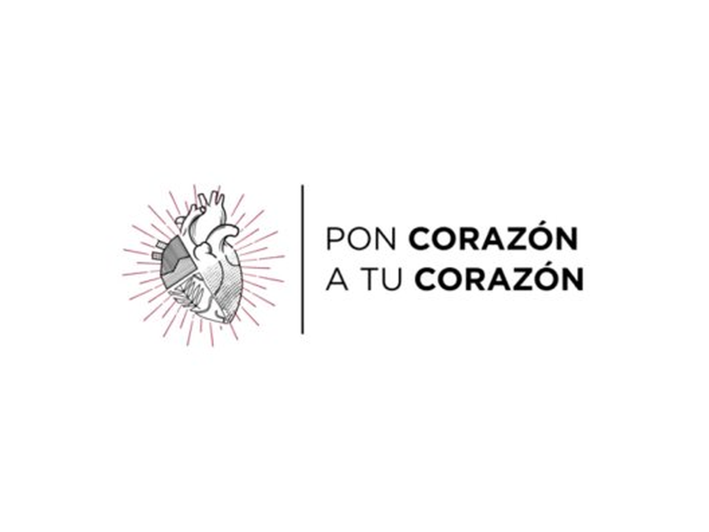
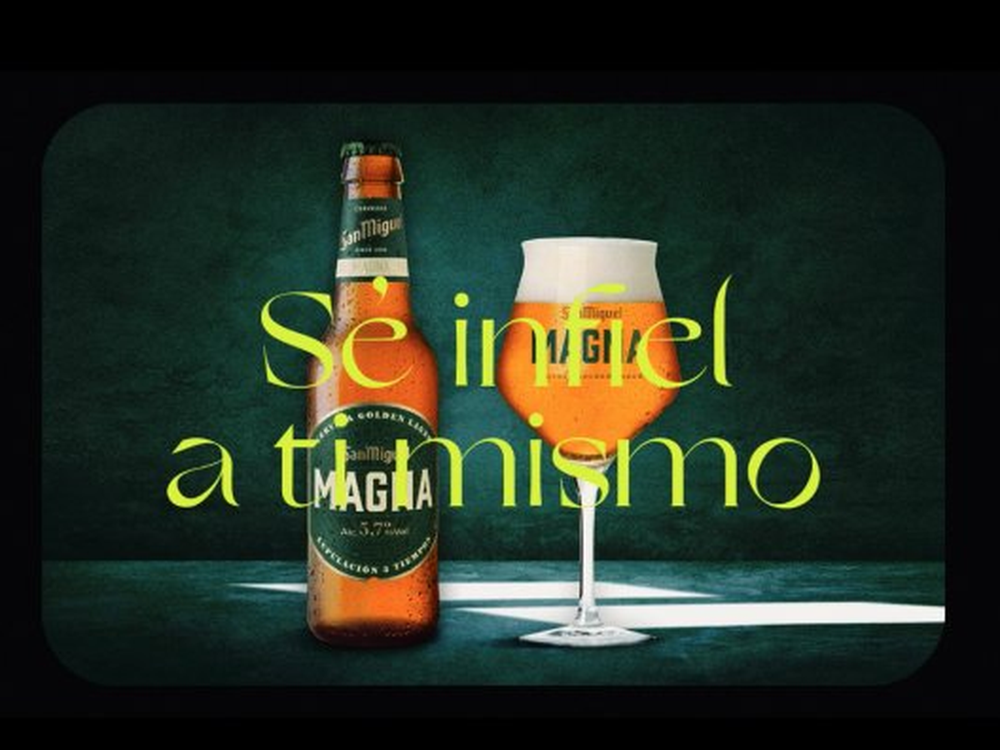

Trabajo seleccionado
Tres años escribiendo para Freepik. Rebranding, la apuesta B2B, Originals y los lanzamientos de la suite de IA.

Product Design y UX writing para ayudar al usuario a mantener su galería en orden.

El primer pack de 3 zapatillas para skaters: dos del pie dominante, una del otro. Doble shortlist en Cannes Lions.

Un videoclip con Lory Money que se convirtió en la campaña más viral del Black Friday y subió las ventas de Worten un 23%. Oro en los Premios Inspirational.

Antes de cada unboxing de YouTube, el "boxing": pre-rolls que mostraban a los niños que montan los productos. Para World Vision. Triple Oro en El Chupete y Oro en Chime Cymbals.

Los mejores ilustradores del país "donaron" sus corazones para ayudarnos a cuidar el nuestro. Campaña 360º con exposición incluida para la Fundación Española del Corazón.

Reposicionamiento de San Miguel Magna para la generación con más contradicciones: una campaña infiel a lo que suele ser una campaña, para una cerveza infiel a sí misma.
